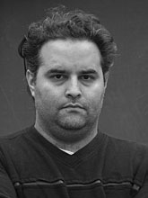
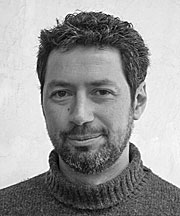
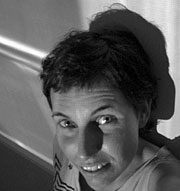

Artistas destacados que forman parte de nuestra muestra permanente
<
Diego Iván Álvarez

Fotógrafo y videasta. En 1990 comienza a interesarse por la fotografía y cursa los talleres del Foto Club Buenos Aires. Inicia el ingreso a la Universidad de Buenos Aires en la carrera de Diseño gráfico pero más tarde se vuelca a la de Diseño de imagen y sonido de la misma Universidad. Actualmente se desempeña como docente en el Taller de diseño audio visual I en la mencionada carrera. También colabora en el taller de Medios Audiovisuales del Colegio secundario Talpiot.
Participa de diversas muestras, entre otras, en 2004 en el Salón Nacional de Artes Visuales, Palais de Glace; en Ciudad, arte y utopías, Espacio Casa de la Cultura ex Diario La Prensa, Gobierno de la Ciudad de Buenos Aires y en Barrios de Buenos Aires, Salón Metrovias, Centro cultural Borges. Durante 2003 en Tapias (serie fotográfica), Galería de la FADU, Facultad de Arquitectura, Diseño y Urbanismo de la Universidad de Buenos Aires y en MULTITUD (instalación sonora), en el Centro Hipermedia Experimental Latinoamericano, CHELA y durante 2002 en Sobrevivientes (Videoinstalación), realizada en la Terraza del Pabellón III de Ciudad Universitaria, FADU/UBA.
Esteban Álvarez

Egresa de la Escuela de Bellas Artes de Buenos Aires en 1992 y en el 2000 de la Middlesex University de Londres.
Entre 1994 y 1995 realiza cursos con Luis Camnitzer en su estudio en Lucca, Italia y en la Universidad Palackeho, Olomouc, de la República Checa. En 2000 participa además en el programa de residencias Gasworks Studios, en Londres y en 2003 en el Hwei-Lann International Artists Workshop de Taiwan.
Participa de numerosas exposiciones entre las que cabe mencionar: Arte y compromiso en Argentina, Museo Extremeño e Iberomericano de Arte Contemporáneo, Badajoz, España (2005); PR04, Puerto Rico (2004); False Impressions, Colchester, Inglaterra (2003); Bienal de Arte Contemporânea das Américas, Fortaleza, Brasil, Contemporáneo 1, Museo de Arte latinoamericano de Buenos Aires (MALBA), Argentina; Unterwegs nach Timbuktu, Ifa Galerie, Berlín, Alemania, y Cité des Ondes, 5ª Manifestation Internationale video et art electronique, Montreal, Canadá (2002); Bienal Nacional de Arte de Bahía Blanca, Museo de Arte Contemporáneo, Bahía Blanca, Argentina (2001); Refried, Cubitt Gallery, Londres, Inglaterra (2000).
Entre otras distinciones, obtiene el segundo premio en la II Bienal del Grabado Latinoamericano y del Caribe de Barranquilla, Colombia (1998), y subsidios a la creación del Fondo Nacional de las Artes (2002), de la Fundación Antorchas (2003) y de la Pollock-Krasner Foundation (Nueva York, 2004).
Es docente en distintas instituciones en Buenos Aires.
Erica Bohm

Egresa de la Escuela de Bellas Artes Prilidiano Pueyrredón, especializada en pintura en 2001. Cursa estudios de fotografía con Gabriel Valansi y Jorge Mónaco (ENFO), dibujo con Pablo Siquier y taller de video arte con Carlos Trilnick. Desde el 2000 asiste a diferentes clases y seminarios de Historia del Arte y Arte contemporáneo.
Entre 2001 y 2003, lleva a cabo junto con Viviana Blanco el proyecto Viceversa de encuentros con artistas plásticos, con el fin de mostrar y difundir sus procesos creativos.
En 2004 obtiene la Beca Trama de Encuentros regionales de análisis de gestión cultural para artistas realizado en Bahía Blanca.
Desde 2003 se desempeña como ayudante adscripta de la Cátedra de Filosofía de Cecilia Marteau en la carrera de Artes visuales del I.U.N.A y en Filosofía y Estética en la carrera de Arte Dramático del mismo Instituto entre 2001 y 2002. Es asistente de Gabriel Valansi para la realización de Abstract y 1:72 (MAMBA (2004).
Participa de las siguientes exposiciones: La Ciudad: Arte y Utopías, Espacio Casa de la Cultura (2004); Proyección de diapositivas de autor, Festival de la luz (2002); Hawaii, Boquitas Pintadas (2002); Muestra colectiva de Fotografías, Belleza y Felicidad (2002), ENFO (2002); Intervención fotográfica-Siguiendo a Man Ray, Centro Cultural Borges (2001); Luci, colori e forme argentine nel terzo millennio, muestra colectiva de fotografias, Napoli, Italia (2001).
Vive y trabaja en Buenos Aires.